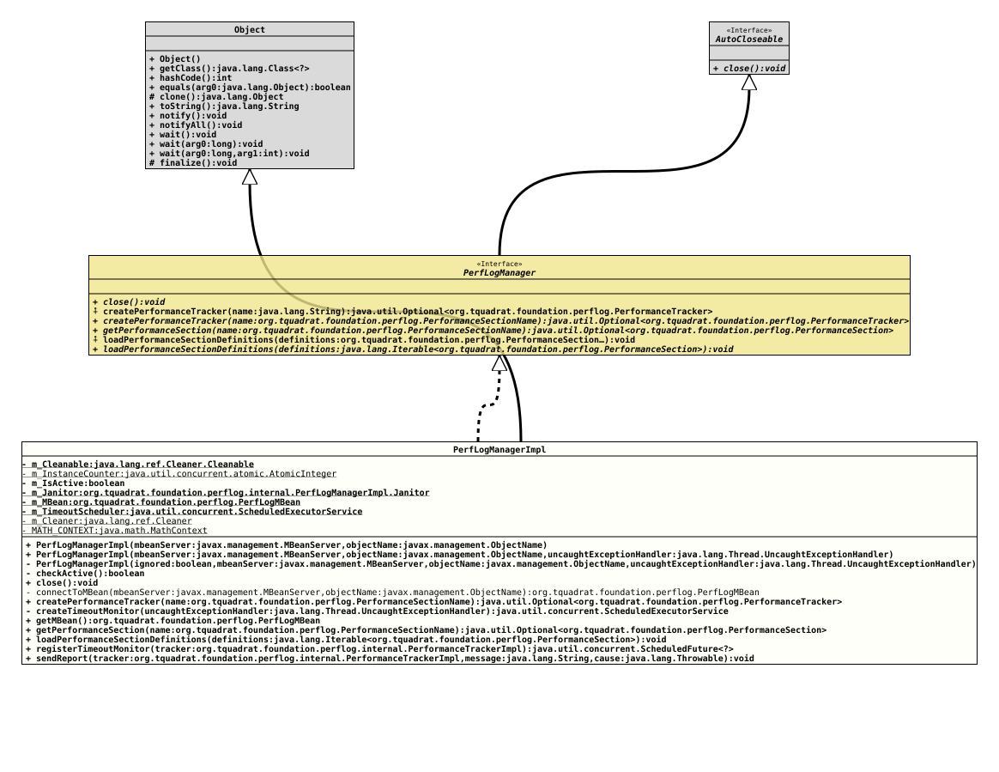

Class PerfLogManagerImpl
- All Implemented Interfaces:
AutoCloseable, PerfLogManager
The implementation for the interface
PerfLogManager.
- Author:
- Thomas Thrien (thomas.thrien@tquadrat.org)
- Version:
- $Id: PerfLogManagerImpl.java 1249 2026-05-17 11:40:55Z tquadrat $
- Since:
- 0.25.0
- UML Diagram
-

UML Diagram for "org.tquadrat.foundation.perflog.internal.PerfLogManagerImpl"
{kind=link}
-
Nested Class Summary
Nested ClassesModifier and TypeClassDescriptionprivate static final recordThe janitor that takes care of the housekeeping for an instance ofPerfLogManagerin case that was not properly closed. -
Field Summary
FieldsModifier and TypeFieldDescriptionprivate final Cleaner.CleanableTheCleaner.Cleanablefor this instance.private static final CleanerThe cleaner that is used to finalise instances ofPerfLogManagerImpl.private static final AtomicIntegerThe instance counter that is used for the thread names increateTimeoutMonitor(UncaughtExceptionHandler).private booleanThe flag the indicates whether this manager is (still) active.private final PerfLogManagerImpl.JanitorThe caretaker for this instance.private final PerfLogMBeanThe proxy for thePerfLogMBean.private final ScheduledExecutorServiceThe timeout scheduler for this manager.private static final MathContextThe instance ofMathContextthat is used byregisterTimeoutMonitor(PerformanceTrackerImpl)to calculate the timeout waiting period from the givenTimeValue. -
Constructor Summary
ConstructorsModifierConstructorDescriptionprivatePerfLogManagerImpl(boolean ignored, MBeanServer mbeanServer, ObjectName objectName, Thread.UncaughtExceptionHandler uncaughtExceptionHandler) Creates a new instance ofPerfLogManagerImpl.PerfLogManagerImpl(MBeanServer mbeanServer, ObjectName objectName) Creates a new instance ofPerfLogManagerImpl.PerfLogManagerImpl(MBeanServer mbeanServer, ObjectName objectName, Thread.UncaughtExceptionHandler uncaughtExceptionHandler) Creates a new instance ofPerfLogManagerImpl. -
Method Summary
Modifier and TypeMethodDescriptionprivate final booleanChecks whether this performance logging manager is still active.final voidclose()private static final PerfLogMBeanconnectToMBean(MBeanServer mbeanServer, ObjectName objectName) Establishes the connection with thePerfLogMBeanon the given MBean server and returns a proxy for it.final Optional<PerformanceTracker> Creates a performance tracker for thePerformanceSectionwith the given name.private final ScheduledExecutorServicecreateTimeoutMonitor(Thread.UncaughtExceptionHandler uncaughtExceptionHandler) Creates theScheduledExecutorServiceinstance that is used as the timeout monitor and registers it for the housekeeping.final PerfLogMBeangetMBean()Provides a reference to the internal instance ofPerfLogMBean.final Optional<PerformanceSection> Returns the performance section specified by the given name.voidloadPerformanceSectionDefinitions(Iterable<PerformanceSection> definitions) Loads the Performance Section definitions.final ScheduledFuture<?> Registers a timeout monitor from a performance tracker.final voidsendReport(PerformanceTrackerImpl tracker, String message, Throwable cause) Sends a performance report to thePerfLogMBean.Methods inherited from class Object
clone, equals, finalize, getClass, hashCode, notify, notifyAll, toString, wait, wait, waitMethods inherited from interface PerfLogManager
createPerformanceTracker, loadPerformanceSectionDefinitions
-
Field Details
-
m_Cleanable
TheCleaner.Cleanablefor this instance. -
m_InstanceCounter
The instance counter that is used for the thread names increateTimeoutMonitor(UncaughtExceptionHandler). -
m_IsActive
The flag the indicates whether this manager is (still) active. -
m_Janitor
The caretaker for this instance. -
m_MBean
The proxy for thePerfLogMBean. -
m_TimeoutScheduler
The timeout scheduler for this manager. -
m_Cleaner
-
MATH_CONTEXT
The instance ofMathContextthat is used byregisterTimeoutMonitor(PerformanceTrackerImpl)to calculate the timeout waiting period from the givenTimeValue.
-
-
Constructor Details
-
PerfLogManagerImpl
Creates a new instance ofPerfLogManagerImpl.- Parameters:
mbeanServer- The MBean server that is used.objectName- The name of thePerfLogMBean.
-
PerfLogManagerImpl
public PerfLogManagerImpl(MBeanServer mbeanServer, ObjectName objectName, Thread.UncaughtExceptionHandler uncaughtExceptionHandler) Creates a new instance ofPerfLogManagerImpl.- Parameters:
mbeanServer- The MBean server that is used.objectName- The name of thePerfLogMBean.uncaughtExceptionHandler- The implementation ofThread.UncaughtExceptionHandlerthat is used for the timeout monitoring thread.
-
PerfLogManagerImpl
private PerfLogManagerImpl(boolean ignored, MBeanServer mbeanServer, ObjectName objectName, Thread.UncaughtExceptionHandler uncaughtExceptionHandler) Creates a new instance ofPerfLogManagerImpl.- Parameters:
ignored- DiscriminatormbeanServer- The MBean server that is used.objectName- The name of thePerfLogMBean.uncaughtExceptionHandler- The implementation ofThread.UncaughtExceptionHandlerthat is used for the timeout monitoring thread.
-
-
Method Details
-
checkActive
Checks whether this performance logging manager is still active. Throws an
IllegalStateExceptionif not.- Returns:
trueif the manager is still active.- Throws:
IllegalStateException-close()was already called on this instance.
-
close
After
close()is called, calls to other methods of this instance may result in anIllegalStateExceptionto be thrown.- Specified by:
closein interfaceAutoCloseable- Specified by:
closein interfacePerfLogManager
-
connectToMBean
Establishes the connection with the
PerfLogMBeanon the given MBean server and returns a proxy for it.If the MBean had not been registered yet, this method will register it first.
- Parameters:
mbeanServer- The MBean server that is used.objectName- The name for the MBean.- Returns:
- A proxy for
PerfLogMBean.
-
createPerformanceTracker
Creates a performance tracker for the
PerformanceSectionwith the given name.The return value will be empty if the performance section is currently ignored.
If there is currently no performance section defined with the given name, one will be created with default values.
- Specified by:
createPerformanceTrackerin interfacePerfLogManager- Parameters:
name- The name of the performance section.- Returns:
- An instance of
Optionalthat holds the new tracker.
-
createTimeoutMonitor
private final ScheduledExecutorService createTimeoutMonitor(Thread.UncaughtExceptionHandler uncaughtExceptionHandler) Creates theScheduledExecutorServiceinstance that is used as the timeout monitor and registers it for the housekeeping.- Parameters:
uncaughtExceptionHandler- The implementation ofThread.UncaughtExceptionHandlerthat is used for the timeout monitoring threads.- Returns:
- The timeout monitor.
-
getMBean
Provides a reference to the internal instance of
PerfLogMBean.- Notes:
-
- This is the proxy, but not the MBean itself.
- The API is not limited to the OpenMBean API that is published to a remote client.
- Returns:
- The reference to the MBean.
-
getPerformanceSection
Returns the performance section specified by the given name.
Delegates to
PerfLogMBean.getPerformanceSection(PerformanceSectionName)- Specified by:
getPerformanceSectionin interfacePerfLogManager- Parameters:
name- The name of the performance section.- Returns:
- An instance of
Optionalthat holds the retrieved performance section.
-
loadPerformanceSectionDefinitions
Loads the Performance Section definitions.
Because these definitions are stored globally in the Performance Logging and Monitorin MBean, they need to be loaded only once. But overwriting them does not harm, other than performance.
Each instance of
PerfLogManagershares the same instances ofPerformanceSection.- Specified by:
loadPerformanceSectionDefinitionsin interfacePerfLogManager- Parameters:
definitions- The definitions for the performance sections.
-
registerTimeoutMonitor
public final ScheduledFuture<?> registerTimeoutMonitor(PerformanceTrackerImpl tracker) throws IllegalStateException Registers a timeout monitor from a performance tracker.- Parameters:
tracker- The performance tracker to register.- Returns:
- The timeout monitor; will be
nullif the given tracker is not active, or the performance section for that tracker does not define a timeout value. - Throws:
IllegalStateException-close()was already called on this instance.
-
sendReport
public final void sendReport(PerformanceTrackerImpl tracker, String message, Throwable cause) throws IllegalStateException Sends a performance report to thePerfLogMBean.- Parameters:
tracker- The tracker that collected the performance data.message- The message describing the reason for the abort of the tracker; can benull.cause- The exception that caused the abort; can benull.- Throws:
IllegalStateException-close()was already called on this instance.
-